The Paper Trail
1760 Tenant Association President, 2024
| Date | Title | Description | File |
|---|---|---|---|
| 01/05/2025 | Board Increases Stipend | In violation of the Bylaws posted by McNulty on May 28, 2024 during the Nomination-themed meeting, Artile 9.11 the Officers voted to raise their stipend from $40 to $50 TA President is paid monthly at minimum of: $50 Stipend $100 Phone $60 "Transportation" or cab & car rides $210 per month minimum for McNulty |
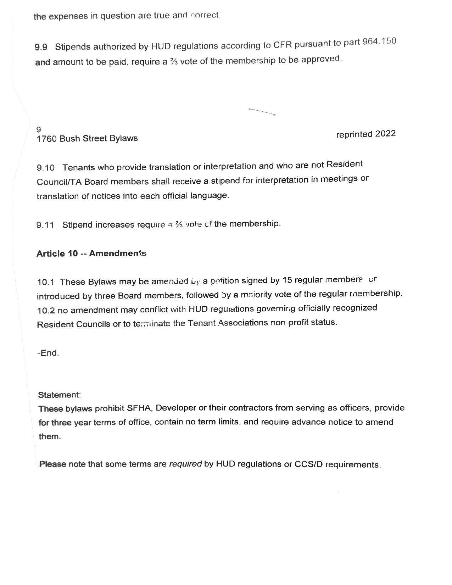 Last Page |
| 10/01/2024 | 2024MMM.pdf | A large PDF detailing the events of the nomination and election called by the TA president and conducted by a non-Independent Third Party in 2024. Chinese, Ukrainian, Russian, and Spanish |
|
| 05/28/2024 | 2024MMM.pdf [English version] |
A large PDF detailing the events of the nomination and election called by the TA president and conducted by a non-Independent Third Party in 2024. | 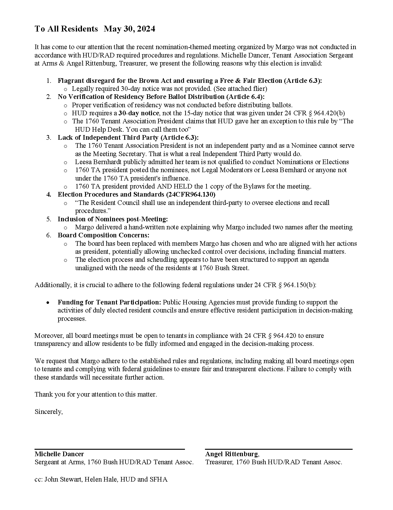 |
| 09/23/2024 | 09232024_MMMnewsGarden.pdf.pdf | A large PDF detailing the events of the nomination and election called by the TA president and conducted by a non-Independent Third Party in 2024. | 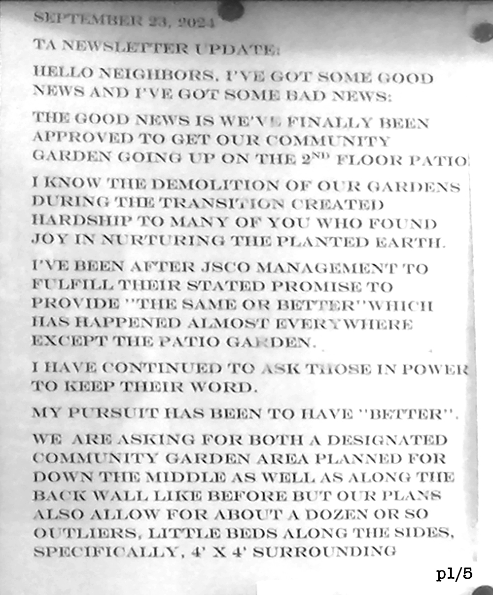 |
| 07/11/2024 | 07112024_letter.jpg | 1760 TA Board Secretary's response to the Notice of Irregular Elections Letter is still glued to Angel's door #412 | 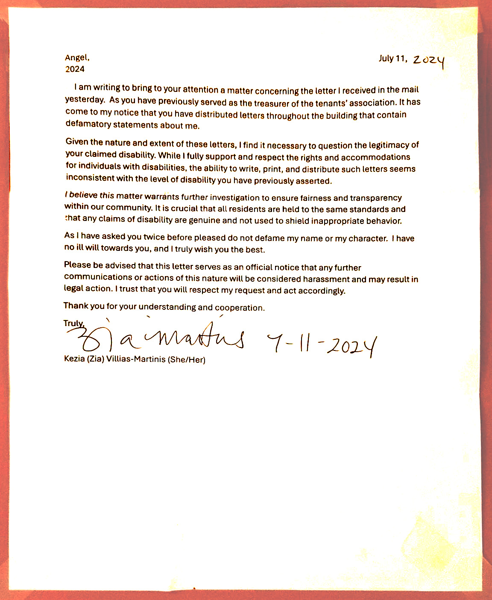 |
| 07/05/2024 | 07052024_MMdefense.pdf | Margo's response to the Notice of Irregular Elections | 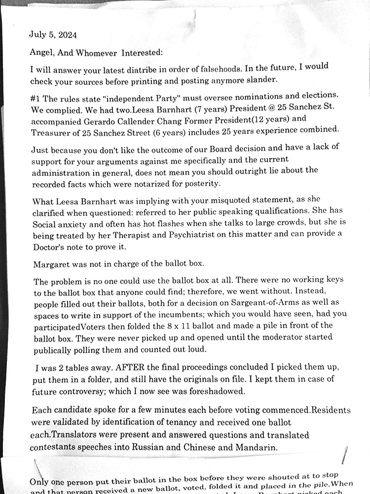 |
| 07/03/2023 | 07032024_election.pdf | Irregular "Election" conducted This file details the alledged five violations of the Code of Federal Regulations concerning the May general meeting. Sgt at Arms Michelle organized Tenants and this Notice of Irregular Nomination & Election document was created. A large PDF detailing the events of the nomination and election called by the TA president and conducted by a non-Independent Third Party in 2024. Chinese, Ukrainian, Russian, and Spanish |
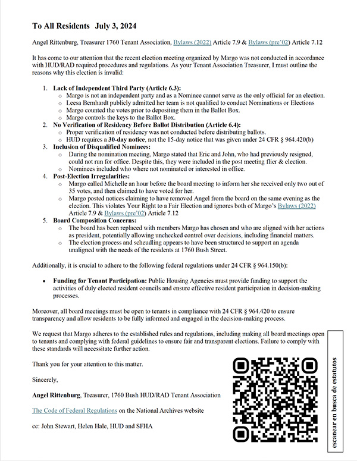 |
| 06/27/2024 | 06272024_MMfiresAR.jpg | Margo "removed" Angel before the Board meeting were Angel can make a statement & Tenants could decide on how to proceed. Margo removes Angel without due process for speaking up about the "nomination" & "election" process she allegedly orchestrated. Margo appears to not respect Robert's Rules of Order Margo disregards the Tenants vote, a clear sign she wants only her "loyal supporters" on the Board. |
 |
| 06/26/2024 | 06262024-01.jpg | Margo - not the independent third party - posted "election" results Margo removes Angel without due process Tenants Vote Disregarded, a clear sign the president of the board needs to be held accountable.. |
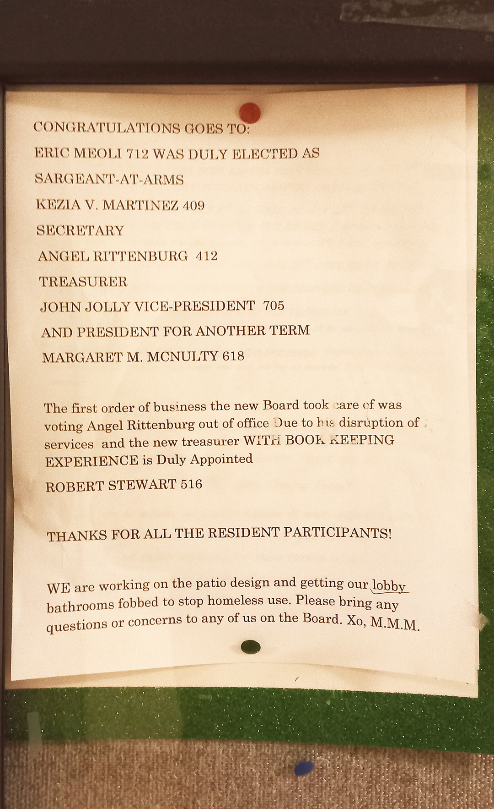 |
| 00/00/2024 | A large PDF detailing the events of the nomination and election called by the TA president and conducted by a non-Independent Third Party in 2024. |
||
| 06/25/2024 | Election-themed meeting held by Margo Here is how it was conducted |
||
| 06/08/2024 | Second Group of nominees posted by Margo, not the "Independent Party" Margo contracted independently from the Board | 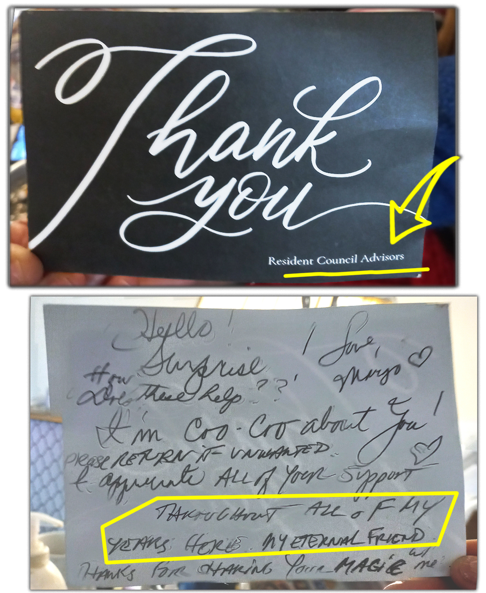 | |
| 05/29/2024 | 05292024_MMMMichelle_02.pdf | Margo leaves Michelle a strange letter Michelle does not understand what Margo is referring to in the letter. |
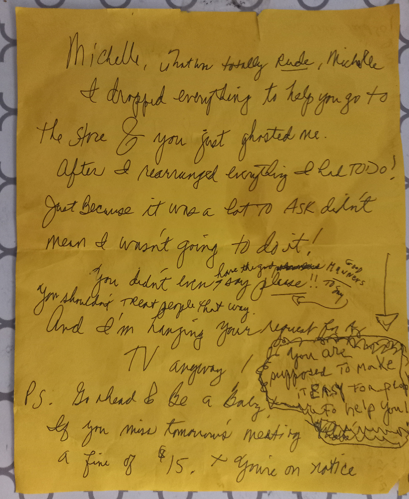 |
| 05/29/2024 | 05292024_MMMwendell.pdf | Margo admits to adding 2 nominations after the meeting Margo is Stacking the Board. Visit this page and get the facts about what happened. |
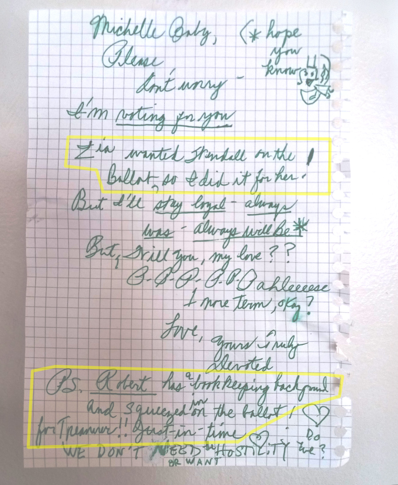 |
| 05/29/2024 | Margo admits to adding 2 nominations after the meeting Margo is Stacking the Board. Visit this page and get the facts about what happened. |
 |
|
| 05/28/2024 | 05282024_MMMnominees.pdf | First Group of nominees posted by Margo, not the "Independent Party" Margo contracted independently from the Board | 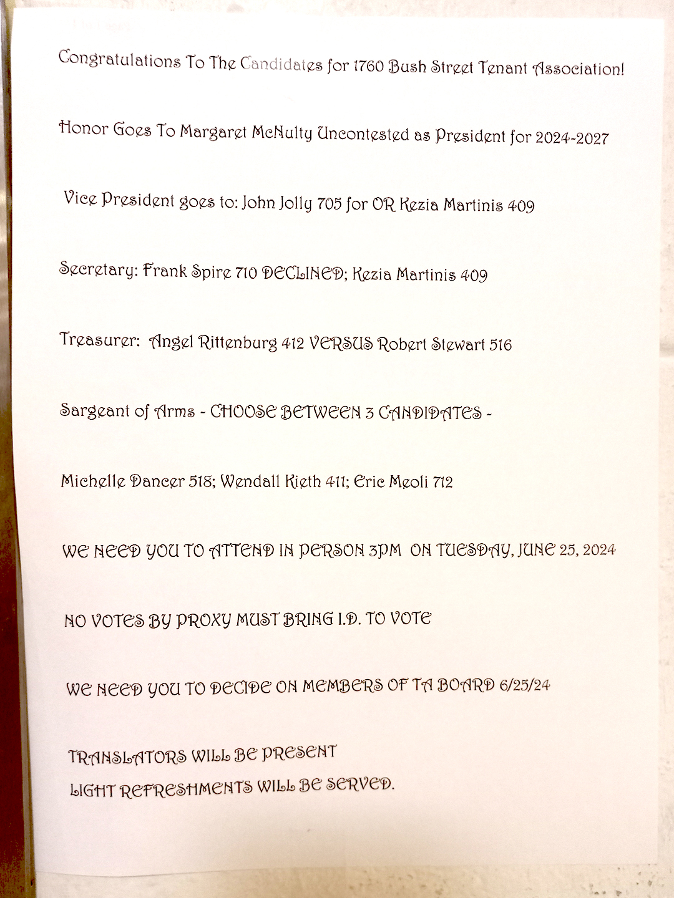 |
| 05/28/2024 | 05282024_nomination.pdf | Nomination-themed meeting goes poorly The PDF linked is part of a larger file. Visit this page and get the facts about what happened. |
|
| 05/28/2024 | 1760 Bylaws | ||
| 05/25/2024 | 05252024_MMMHappyMemDay.jpg | To honor this country's fallen soldiers and the end of Bikini Season, Margo will host a Pizza & Cake & Song Party | 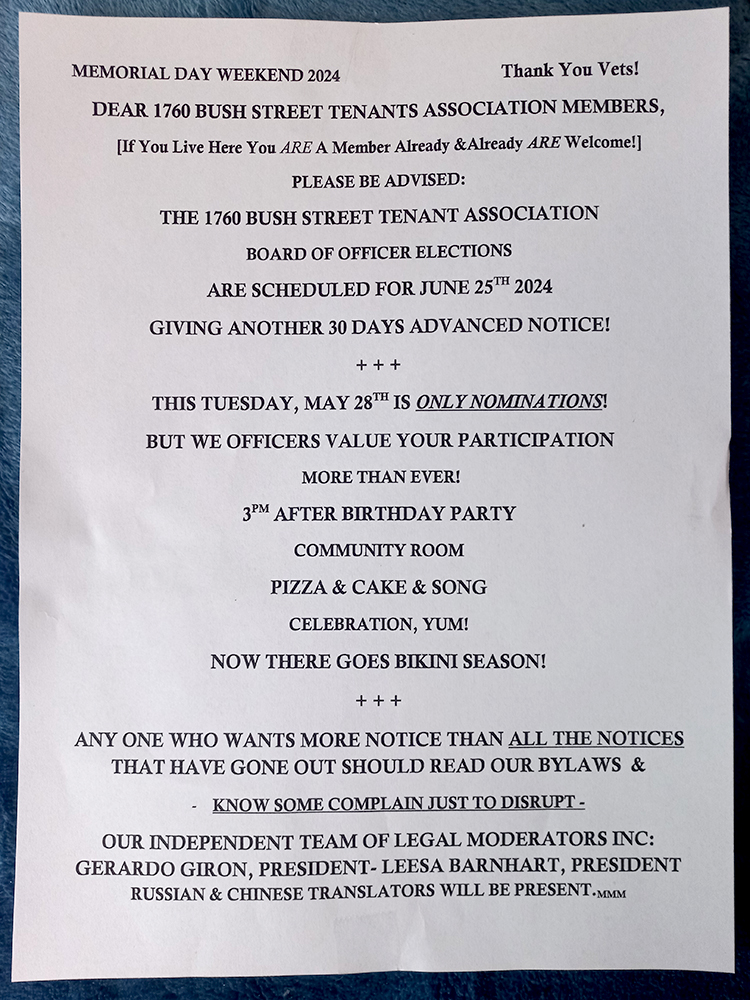 |
| 05/24/2024 | 05242024_SupremeMMM.pdf | Nomination-themed meeting goes poorly The PDF linked is part of a larger file. Visit this page and get the facts about what happened. |
 |
| 05/23/2024 | 05232024_SupremeMMM.pdf | SHE IS NOT the "governing body" of any Board. The whole concept of a Board is to ensure there are multiple voices and interests represented within an organization. Visit Page 3 of this document to learn what Margo thinks her role is. |
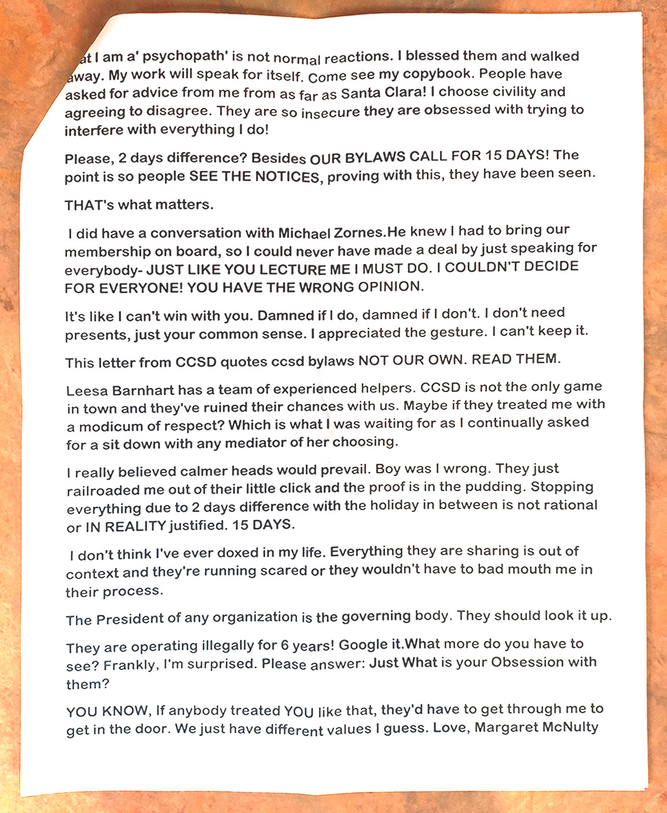 |
| 05/22/2024 | McNulty's Public Response to CCS/D Recall | Margo's version of events leading up to McNulty Recalled as CCSD President in Q1 2024. |
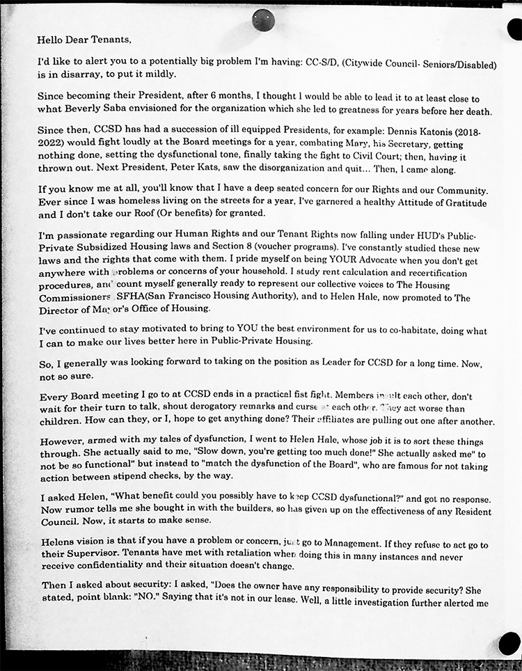 |
| 05/19/2024 | 05/19/2024-AR-MM-text.pdf | Margo and Angel text messages This helps clarify how Margo views her role, her RCA project, and what it means to be an accountable public official. Let's Check the Facts |
 |
| 05/15/2024 | 05152024dearTenant.jpg | Can it be true? Let's Check the Facts |
 |
| 05/14/2023 | 05142024.pdf Disregard of Brown Act Breach of Decorum |
Irregular Nomination & Election flier posted Angel & Margo texts regarding the short notice Margo delivers inflamatory text to Angel [how would you react?] Margo dismisses Brown Act, Code of Federal Regulations and Your Right to a free and fair election |
 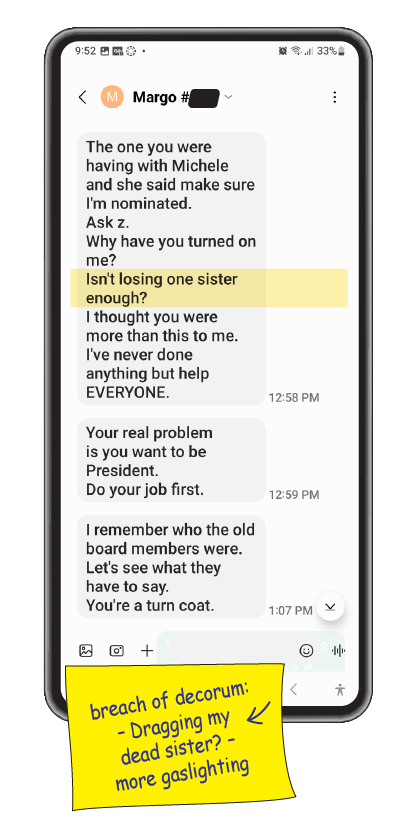 |
| 04/04/2023 | HOC-April-4-2024-Meeting-Minutes-Adopted.pdf |
Margaret McNulty appointed to Seat 11, Board on the Local Homeless Coordinating Board of the Homeless Oversight Committee Here is a link to the agenda [page 11] announcing the appointment. McNulty is NOT a commissioner, she sits on one of the 4 boards this commission administers. |
|
| 03/2023 | CCSDcause.html | CCSD begins Recall, formal vote in Apr 2024 meeting |  |
| 09/2022 | TBA | CCSD appoints Margo as Interm President of CCSD | |
| 2022 | TBA | MMM negotiated to return 1760 Bush to CCSD Margo was appointed Secretary Margo lost the election for president of CCSD, she was appointed after the elected president had to resign for personal reasons. Notes from these negotiations have been lost, however Margo has publicly admitted that she wanted 1760 Bush to rejoin CCSD so she could be president and "fix the dysfunction". |
|
| 2016 | 1760 Tenants voted to disassociate with CCSD | Vote to disassociate was legit, BUT ... A notary validates signatures, not the legality of the document the signature is on. The 2016 1760 Board never submitted a letter announcing departure. CCSD voted to forgive the arrears if 1760 Bush TA re-affiliated. |
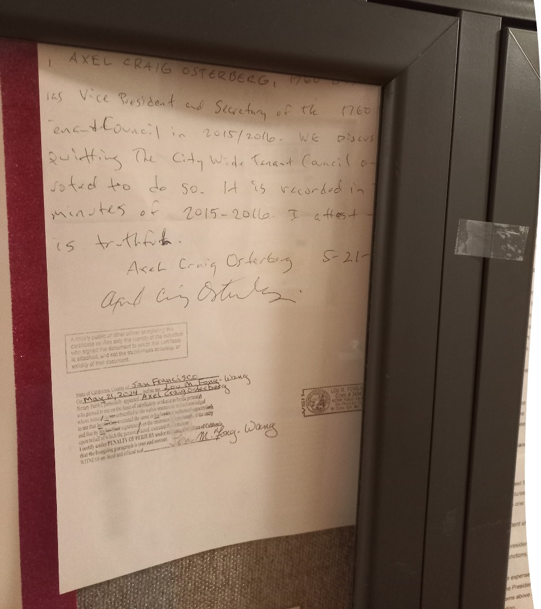 |
{kind=link}
{kind=link}
{kind=link}
{kind=link}
{kind=link}
{kind=link}
{kind=link}